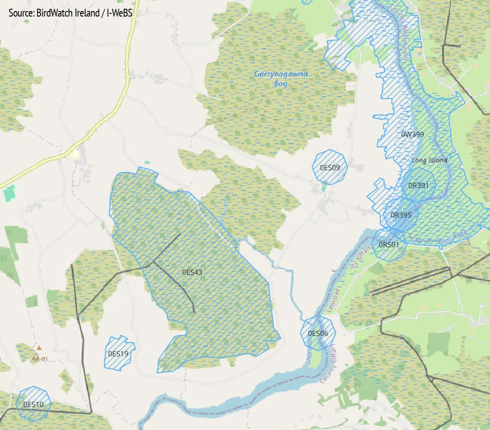
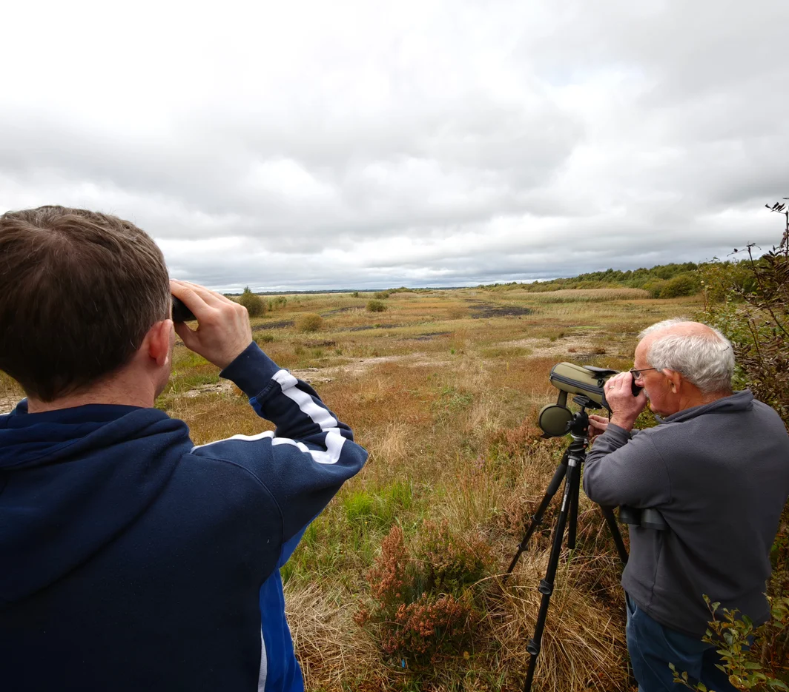

International Swan Census
Cornafulla Micro Reserve participated in the ninth International Swan Census, held on 17–18 January 2026. This international survey monitors wintering swan populations across Ireland, Britain and Iceland.
Conducted every six years, the International Swan Census focuses specifically on Whooper Swans and Bewick's Swans, providing vital data on their population sizes, distribution and wintering habitats
In Ireland, the census was coordinated by Aisling Kinsella, National Coordinator of the Irish Wetland Bird Survey (I-WeBS) at BirdWatch Ireland, working with volunteer surveyors and National Parks and Wildlife Service staff across the country.
Cornafulla's 2026 Swan Census
During the International Swan Census on 18 January 2026, Cornafulla Micro Reserve volunteers recorded 219 Whooper Swans across Cornafulla Bog and the Shannon Callows.
The survey covered three established Shannon Callows subsites identified by BirdWatch Ireland: Inchinalee, Cloonown (west of Long Island) and Derrineel, together with observations from Cornafulla Bog.

Survey locations were identified using official subsite codes and coordinates. The census methodology involved counting all swans present, recording whether birds were roosting or feeding, noting the habitat and time of observation, and distinguishing adults from juveniles where possible.
Recording birds on Cornafulla Bog was particularly important because it lay outside the established I-WeBS subsite network at the time of the census. Volunteers had been documenting Whooper Swan flocks there throughout December 2025, which helped to identify it as an area for inclusion in the survey.
Cornafulla Bog and the Shannon Callows provide connected wintering habitats. Whooper Swans use the seasonally flooded grasslands of the Callows for feeding and areas of standing water on the bog for roosting. Their movements link habitats within the Middle Shannon Callows Special Protection Area (SPA) with adjoining land outside the designated boundary.
Why the International Swan Census Matters
Whooper Swans breed in Iceland and migrate to wintering grounds in Ireland and Britain. Bewick's Swans breed in Arctic Russia and winter in north-western Europe. Their different migration routes make coordinated international monitoring particularly important.
The census provides information on population changes, wintering distribution, breeding success and habitat use.
The previous census, in 2020, recorded 19,111 Whooper Swans across the island of Ireland, including 14,467 in the Republic of Ireland. This represented increases of 24.9% in the Republic and 32% in Northern Ireland compared with 2015.
Although numbers had increased in Ireland, they had risen more rapidly at some wintering sites in Britain. This suggested a continuing shift in the distribution of the Icelandic-breeding population, rather than a uniform increase across its wintering range.
Preliminary Results from the 2026 Census
In August 2026, BirdWatch Ireland published preliminary findings in I-WeBS News, Issue 30.
Cian O'Flaherty, I-WeBS Scientific Officer, reported extensive coverage, with more than 1,000 survey subsites visited during the census.
The provisional estimate was just over 13,500 Whooper Swans in the Republic of Ireland, suggesting a slight decline since 2020. Roscommon, Mayo and Galway recorded the highest numbers of wintering swans.
Improved pastures, permanent lakes and turloughs accounted for approximately two-thirds of Whooper Swan habitat use recorded during the census.
The findings also confirmed the continuing decline of Bewick's Swans in Ireland. Only four Bewick's Swans were recorded in the Republic during the 2026 census, including one in County Roscommon.
Climate change is one factor in their declining presence in Ireland. Warmer winters allow Bewick's Swans to remain further east, closer to their breeding grounds, while low breeding success has also contributed to their decline.
The full 2026 results, including Northern Ireland, are expected to be published in 2027 in BirdWatch Ireland's scientific journal Irish Birds. These findings will contribute to the wider assessment of swan populations across their international wintering ranges.
Continuing Waterbird Monitoring at Cornafulla
Following the International Swan Census, BirdWatch Ireland invited Cornafulla Micro Reserve volunteers to participate in the Irish Wetland Bird Survey (I-WeBS).

In September 2026, Cornafulla Bog was established as a new I-WeBS subsite, 0ES43, allowing observations from the bog to be incorporated into the national monitoring programme.
Cornafulla Micro Reserve volunteers now undertake monthly waterbird counts during the September–March survey season, covering Cornafulla Bog and neighbouring areas of the Shannon Callows.
This continuing programme provides a more regular record of wintering waterbirds and their use of the connected bog and floodplain habitats.
Further Information
I-WeBS News, Issue 30, August 2026, page 2: Results from the 2026 Swan Census, by Cian O'Flaherty Irish Wetland Bird Survey